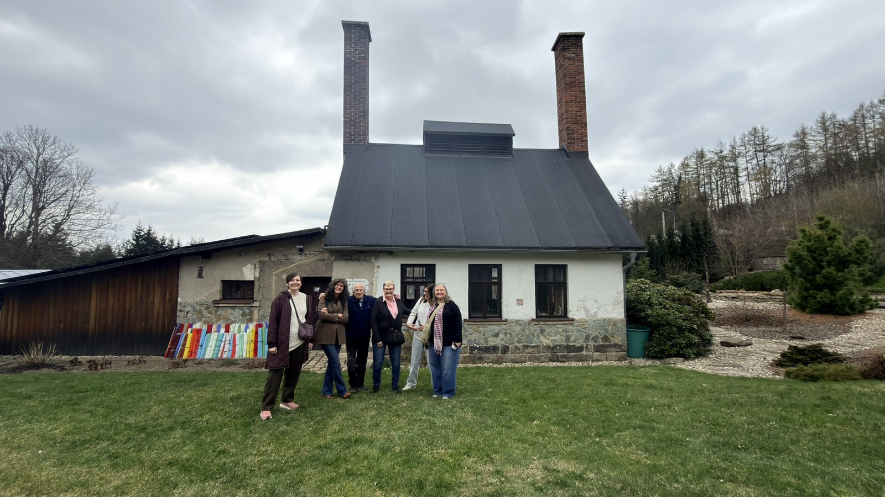
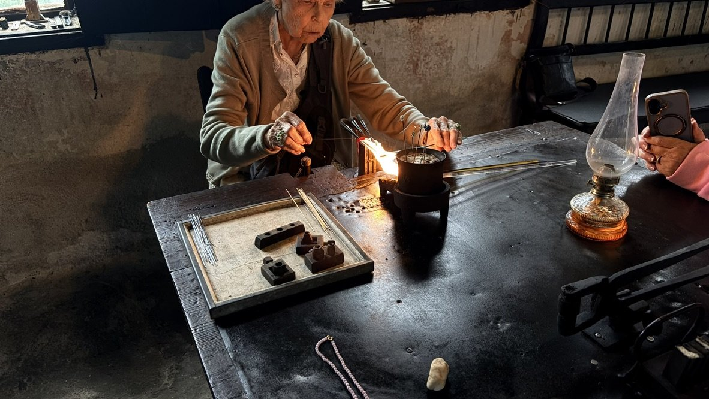

Bring your bead club to the home of Czech glass
A calm page for club secretaries, teachers, and small groups — something you can share with members, without a hard sell.
If you organise a bead club, a class, or a few friends who like to travel together, you are very welcome. We are happiest with a group of about five or six.
Who we are
We are an English–Czech couple living near Prague. We run small beading holidays to Jablonec nad Nisou — not a coach tour, and not a set itinerary.
We stay with you through the days, help with language, and put the visits together around what your group actually wants to see.
Why about five or six
A group of about five or six is usually the nicest size. Factories and workshops are easier to move through. Shops do not feel crowded. The hotel still feels like a small holiday rather than a bus party.
It is often the best value as well. Larger groups are possible, and smaller ones too. Five or six is the size we find works most comfortably.

What a few days can include
There is no typical tour. A few days might take in:
- a glass and jewellery museum
- more than one bead factory — press, polish, cut and fire-polish
- antique bead shops, for rummaging
- lamp-work and Christmas-pearl workshops
- old glass works and button-pressing places
- shopping spread through the week, so it is not all in one rush
- help shipping beads home
Tell us what your members care about, and we will shape the days around that.

Grown over the years
The tours have grown since we started. There is more to see now than there used to be — especially recently. New visits have opened up, and we can fit more into a few days than we once could, without turning it into a rush.
What’s included
Prices include the hotel, breakfast and transport. Flights are not included.
Current prices live on our pricing page — that is the best place to look, so you always see what is published. A day trip is possible if a few days feels like too much; there is a short day trips page as well.
How to enquire
One organiser and one email thread is plenty. We can then answer questions, talk through dates, and see whether a few days would suit your group.
bananas4beading@icloud.com
+420 606 588 330
bananas4beading.com
A quiet next step
We are happy to answer questions. There is no pressure and no obligation — a note from the club secretary is enough to start.
If you would like a sense of how other beaders have found the holidays, there are notes from happy customers and a few articles written about us.